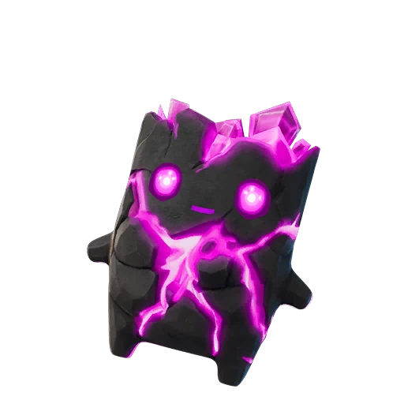
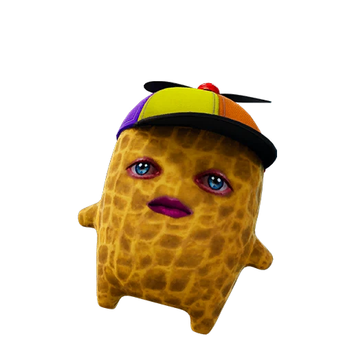
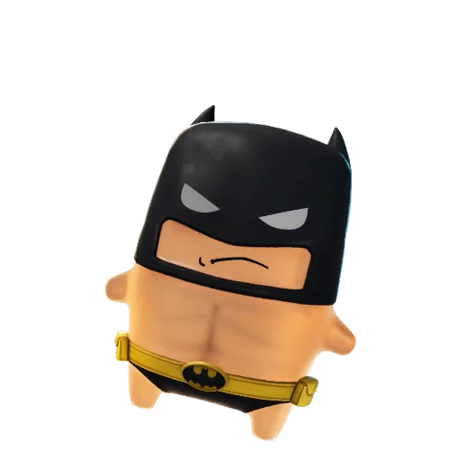
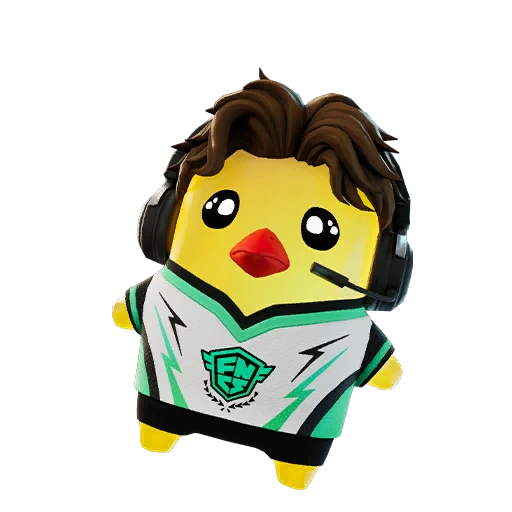
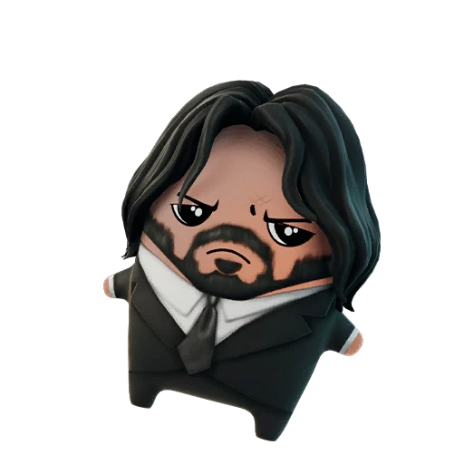

Rarity Tier
Mythic Sprites in Fortnite: Full List, Abilities, and Collection Guide
There are 8 Mythic Sprites in Fortnite. See each one's ability below, then mark the ones you own on the FORTNITE SPRITES TRACKER.

Zero Point Sprite Mythic
Burnt Peanut Sprite Mythic
Batman Sprite Mythic
Pollo Sprite Mythic Vini Jr. Sprite Mythic Ironmouse Sprite Mythic
John Wick Sprite MythicCollecting every Mythic Sprite? Track your progress as you go.
Open the FORTNITE SPRITES TRACKER →What Mythic Sprites Are in Fortnite
Mythic Sprites are the rarest tier of collectible companions in Fortnite, sitting at the very top of the Sprite rarity ladder above Rare, Epic, and Legendary. These tiny allies follow you through a match and trigger powerful passive effects that can swing a fight in your favor. Because they occupy the Mythic slot, Mythic Sprites are designed to feel like trophy finds rather than everyday pickups, and most players go many matches without ever seeing one.
What makes Mythic Sprites stand out is the combination of scarcity and impact. Their abilities lean into high-value moments such as eliminations, healing, and punishing enemies who shoot you, so landing a Mythic Sprite often shapes how you play the rest of the round.
The Full List of Mythic Sprites
There are eight Mythic Sprites to chase, each with its own ability and source. Grim Reaper marks players who damage you, helping you track and hunt down the enemy that just chipped your health; it shows up in chests across the map, so any looting run gives you a slim shot at it. Zero Point spawns a Shield Bubble Jr. when you heal yourself, turning every bandage or shield potion into a pocket of cover, and it is found in Vault or keycard Sprite Chests rather than ordinary loot.
Burnt Peanut can drop extra or even mythic loot on eliminations, rewarding aggressive play with better gear; it appears specifically in Relic Chests. The collab wave then grew the tier fast: Batman (Hot Bat Summer) is the most attainable at a published 2.23%, Pollo restores Shield to you and nearby teammates on eliminations, Vini Jr. turns sprinting into a destructive slide, Ironmouse arrived with v41.30 (its ability is still being confirmed in-game), and John Wick reveals nearby enemies after a knock — uniquely, you claim it in Reload mode first. Together these eight Mythic Sprites cover offense, defense, intel, and loot generation, so the set you build says a lot about your preferred style. Tracking which of these Mythic Sprites you already own is exactly what the FORTNITE SPRITES TRACKER is built for.
How to Get Mythic Sprites
Getting Mythic Sprites comes down to opening the right containers and accepting that luck plays a huge role. Grim Reaper can come from regular chests scattered across the map, which means volume looting is your best friend; the more chests you crack, the more chances you create. Zero Point requires you to push higher-stakes objectives, since it only appears in Vault or keycard Sprite Chests that you have to unlock, and Burnt Peanut is tied to Relic Chests, so you need to know where those spawn. Batman, Pollo, Vini Jr., and Ironmouse roll from Sprite Chests and the wider chest pool, while John Wick is a Reload-mode hunt: find it in Reload chests, take it off a carrier, or win the match, and it unlocks for Battle Royale too.
Unlike Rare Sprites, the Mythic Sprites have no summon cost listed, so you cannot simply buy your way to them. That makes location knowledge the real key. Plan landing spots around chest-dense areas, rotate toward Vaults and Relic Chests when the circle allows, and stay alive long enough to keep opening containers.
How Rare and Strong Mythic Sprites Are
Mythic Sprites are staggeringly rare — with one famous exception. Zero Point carries a base drop rate of just 0.00093%, among the lowest numbers anywhere in the Sprite system, which explains why most accounts never log one, while Grim Reaper sits at 0.09%. Batman is the accessible outlier at a published 2.23%, and Burnt Peanut (rate no longer published) is locked behind Relic Chests rather than the open loot pool. The newest Mythics — Pollo, Vini Jr., Ironmouse, and John Wick — have no published rates yet.
Strength-wise, the Mythic Sprites earn their tier. Grim Reaper's marking effect gives you constant target intel, Zero Point's on-heal shield bubble adds survivability at no cost to your inventory, and Burnt Peanut's loot drops can hand you a mythic weapon mid-fight. These are not minor stat bumps; they are round-defining tools, which is why the Mythic Sprites are so coveted.
Tips for Collecting All Mythic Sprites
Collecting every Mythic Sprite takes patience and a plan. First, treat each Mythic Sprite as a separate hunt with its own route: prioritize Relic Chests for Burnt Peanut since it has the friendliest odds, then build chest-heavy and Vault-focused rotations for Grim Reaper and Zero Point. Second, play long, survivable games rather than hot-drop sprints, because more time alive means more containers opened and more rolls at these vanishingly rare drops.
Finally, keep records so you do not lose track of progress across the Mythic Sprites you own and the variants still missing. Logging each pull the moment it happens stops you from second-guessing later. We invite you to track your Mythic Sprites collection on the FORTNITE SPRITES TRACKER so every find — from Grim Reaper to John Wick — is saved in one place. With steady looting and smart routing, the full set of Mythic Sprites is within reach.
Frequently asked questions
How many Mythic Sprites are there in Fortnite?
There are eight Mythic Sprites: Grim Reaper, Zero Point, Burnt Peanut, Batman, Pollo, Vini Jr., Ironmouse, and John Wick. Each has a distinct ability and a specific source, from regular chests to Vault, keycard, and Relic Chests — and, for John Wick, the Reload mode.
What is the rarest Mythic Sprite?
Zero Point is the rarest with a base drop rate near 0.00093%; Grim Reaper sits at 0.09% and Batman at a friendly 2.23%. Burnt Peanut, Pollo, Vini Jr., Ironmouse, and John Wick have no published rates, though Burnt Peanut only appears in Relic Chests.
Can you buy Mythic Sprites with a summon cost?
No. The Mythic Sprites have no listed summon cost, so you cannot purchase them. You earn them by opening the right chests and relying on extremely low drop rates.